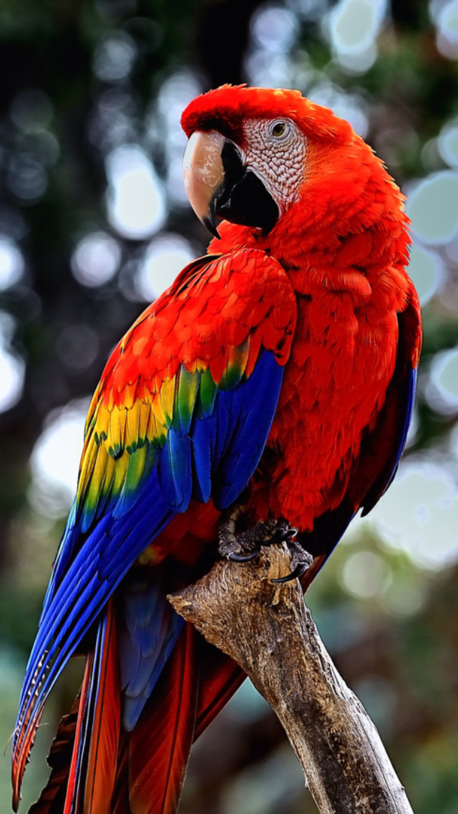

Pappagallo
Generalità
Il pappagallo è una delle specie più ammirate al mondo.
E' un erbivoro, diffuso in Oceania, nei Caraibi, e in America centrale lo troviamo sugli allori.
Solitamente pesa 3 kg ed è lungo tra gli8,7 cm e i 100 cm.

Curiosità
- Riesce a percepire suoni tra i 400 e i 20000 hertz.
- Hanno la capacità di ricordarsi l'esatta successione dei vari toni e voci che hanno ascolatato durante tutta la vita.